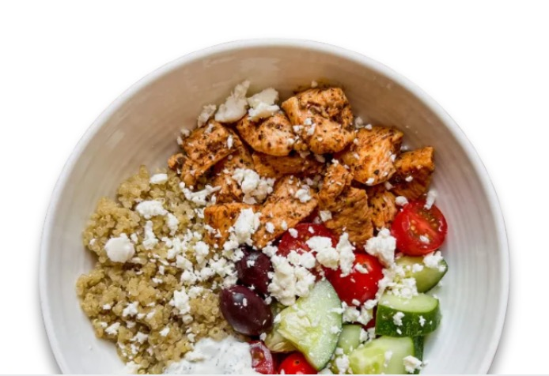
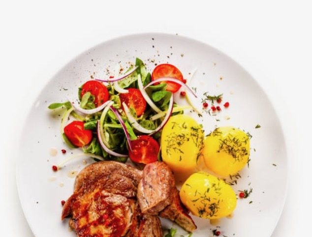
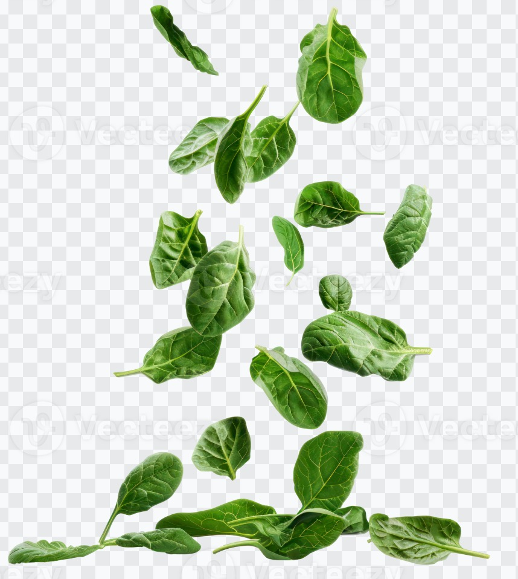

Eat better,
not less.
Tell us what's on your plate. We'll spot the nutritional gaps and suggest simple, realistic additions — without asking you to give up the foods you love.
Analyze My Meal Free · No account needed · Results in seconds

Most healthy eating advice tells you what NOT to eat. We take a different approach — we help you build on what you already enjoy by identifying nutritional gaps and filling them with simple additions.

Three steps to a healthier meal
No calorie counting. No strict diets. Just smarter choices, powered by AI.
Describe your meal
Type what you're eating — as simple as "burger and fries" or as detailed as you like. Optionally add dietary restrictions.
AI analyzes it
Our AI nutritionist identifies the nutritional gaps — excess sodium, missing fiber, lack of vitamins, and more.
Get smart additions
Receive 3–4 realistic, specific foods to add alongside your meal to create a healthier, more balanced plate.

Your meal,
just a little better.
We don't tell you to swap your burger for a salad. We suggest adding a handful of spinach, a side of cherry tomatoes, or a glass of water — small, achievable changes that actually make a difference.
Try it nowEverything you need to eat smarter
Built to be practical, personalized, and instant.
Nutritional concern detection
See exactly what's off about your meal — too much sodium, saturated fat, refined carbs, or missing key nutrients.
Personalized food additions
Get 3–4 specific, real foods with portion sizes, reasons, and key nutrients listed. No vague advice, no supplements.
Dietary restriction support
Vegan, gluten-free, keto, halal, nut-free, and more — every suggestion strictly respects your restrictions.
Before & after nutrition score
Animated bars show how additions improve your meal's fiber, protein, vitamins, and overall balance.
Instant results
Powered by GPT-4o — full analysis in seconds. No account, no sign-up, no waiting.
Private & secure
Your API key and meal data live only in your browser. Nothing is sent to or stored on any third-party server.
See what an analysis looks like
Here's what you get when you enter "double cheeseburger and large fries".
Ready to eat a little better today?
It takes 30 seconds. Just describe your meal and let AI do the rest.
Analyze My Meal — Free